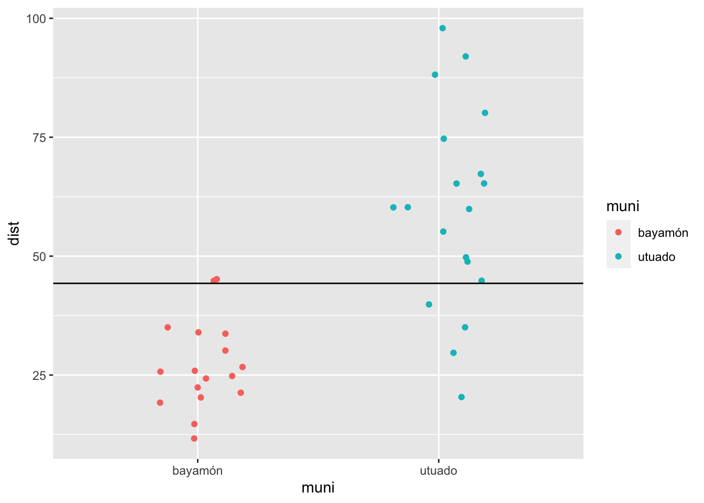
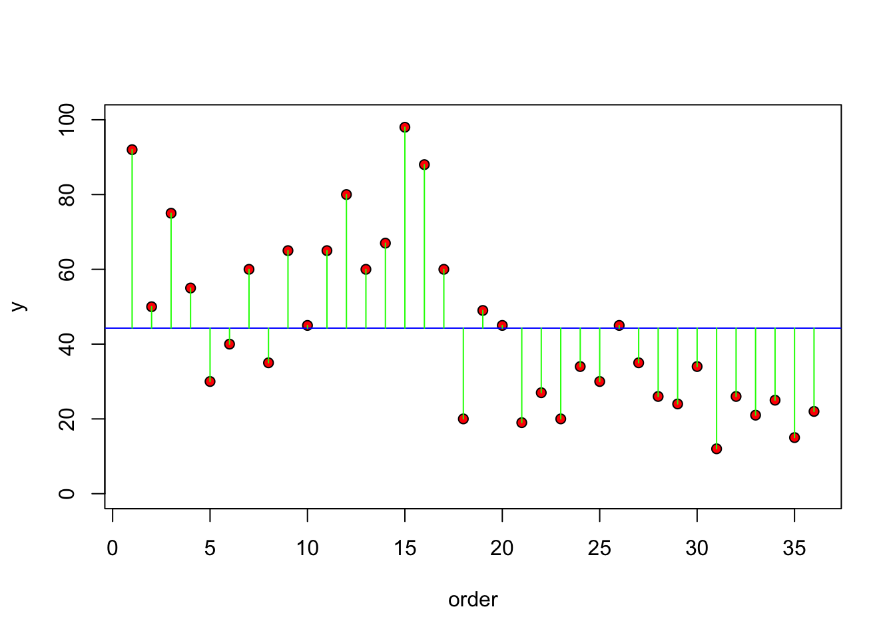

T10 Pruebas t Independiente
Fecha de la ultima revisión
## [1] "2022-10-03"

library(car) # para la prueba de leveneTest
library(RVAideMemoire) # para la prueba de byf.shapiroLa prueba t con datos independiente
Una de las pruebas más común es la de comparar dos grupos y evaluar si los promedios de estos grupos son diferentes. Por ejemplo determinar si la edad de los estudiantes una clase es diferentes entre mujeres y hombres. Evaluar si dos concentraciones de antibiótico resulta en una reducción en el tiempo de infección de una enfermedad especifica. NOTA IMPORTANTE: los datos provienen de diferentes individuos, solamente un valor por individuo. Recuerda que en la prueba anterior de la prueba de t con datos pareados tenemos más de un dato por cada persona/individuo/unidad de muestreo.
Datos
Producimos un set de datos de diferentes personas, con las siguientes variables, el genero, la distancia (dist) viajada por estudiantes que van a la universidad de UPR-Utuado y UPR-Bayamón.
genero=c("m","f","f","f",
"f","f","f","f","f",
"m","f","m","f","f",
"m","m","f","f","f",
"f","f","m", "f","m",
"m","f", "f", "f","f",
"f","m","m","m","f",
"f","f")
dist=c(92,50,75,55,
30, 40,60,35,65,
45, 65, 80,60,67,
98,88,60,20,49,
45, 19,27,20,34,
30,45, 35,26, 24,
34,12, 26, 21, 25,
15, 22)
muni=c("utuado","utuado","utuado","utuado",
"utuado","utuado","utuado","utuado","utuado",
"utuado","utuado","utuado","utuado","utuado",
"utuado","utuado","utuado","utuado","utuado",
"bayamón","bayamón","bayamón","bayamón","bayamón",
"bayamón","bayamón","bayamón","bayamón","bayamón",
"bayamón","bayamón","bayamón","bayamón","bayamón",
"bayamón","bayamón")Unir los datos en un data frame con la función de “data.frame( )”
viajes=data.frame(genero,dist,muni)
head(viajes)| genero | dist | muni |
|---|---|---|
| m | 92 | utuado |
| f | 50 | utuado |
| f | 75 | utuado |
| f | 55 | utuado |
| f | 30 | utuado |
| f | 40 | utuado |
tail(viajes)| genero | dist | muni |
|---|---|---|
| m | 12 | bayamón |
| m | 26 | bayamón |
| m | 21 | bayamón |
| f | 25 | bayamón |
| f | 15 | bayamón |
| f | 22 | bayamón |
Hacer un gráfico de los datos. Si calculamos el promedio de todos los valores de “Y” y lo visualizamos, vemos que muchos de los valores del municipio “bayamón” son muy por debajo los valores de la linea y muchos de los valores del municipio “utuado” son muy por encima.
mean_dist=mean(viajes$dist)
ggplot(viajes, aes(muni, dist, colour=muni))+
geom_jitter(width = .2)+
geom_hline(yintercept = mean_dist)
Las hipótesis
La Nula
- Ho: es que la distancia promedia que viaja los estudiantes es igual irrelevante del municipio donde estudian
- Ho: Promerio_1 = Promedio_2 o mejor
- Ho: \(\overline{x}_1=\overline{x}_2\)
La Alterna
- Ha: es que la distancia promedia que viaja de los estudiantes no es igual (depende del municipio donde provienen)
- Ha: \(\overline{x}_1\ne\overline{x}_2\)
Otra alternativa para visualizar es observar la diferencias entre el valor de la “y’s” y del promedio de esa variable, o sea los residuales (la diferencia entre el promedio y el valor se llaman los residuales. Nota que esto aparece a la gráfica de residuales de la regresión lineal.
plot(1:36, dist, ylim=c(0, 100), ylab="y", xlab = "order", pch=21, bg="red")
abline(h=mean(dist), col="blue")
for(i in 1:36) lines(c(i,i), c(mean(dist), dist[i]), col="green")
Ahora vamos a separar la gráfica y visualizar los residuales por grupo, en otra palabra, cual son los residuales entre los valores y el promedio dentro de los mismos grupos. Se observa en este caso que hay menos varianza entre los valores de un mismo grupo. Note que en el grupo de bayamón que los valores son bastante cerca del promedio de este grupo en adición que los valores de utuado estan más cerca de su promedio. Compara los residuales con la gráfica anterior.
plot(1:36, dist, ylim=c(0, 100), ylab="y", xlab = "order", pch=21, bg="red")
abline(h=mean(dist[muni=="bayamón"]), col="blue")
abline(h=mean(dist[muni=="utuado"]), col="red")
index<- 1:length(dist)
for (i in 1:length(index)){
if(muni[i]=="bayamón")
lines(c(index[i], index[i]), c(mean(dist[muni=="bayamón"]),dist[i]), col="blue")
else
lines(c(index[i], index[i]), c(mean(dist[muni=="utuado"]),dist[i]), col="red")
}Comparación de dos grupos
Hay diferentes acercamiento para hacer la prueba de t (t-test). Usaremos la más conocida. Donde comparamos el promedio de un grupo con el promedio de otro grupo, y determinar si no hay diferencias entre los grupos, la diferencias entre uno y el otro debería acercarse a cero si no hay diferencia entre los grupos. Hay que tomar en cuenta la cantidad de varianza/error en los análisis. Esto se toma encuenta considerando el error estándar en la formula siguiente.
\[t= \frac{\bar{X_1}-\bar{X_2}}{SE}\]
Más especifico la estadistica de t y el error estándar se calcula de la siguiente forma.
\[t=\frac{\bar{X_1}-\bar{X_2}}{\sqrt{\frac{{s}^{2}_p}{n_1}+\frac{{s}^{2}_p}{n_2}}}\]
Donde la varianza ponderada (Weighted variance, \({s}^{2}_p\)), es un indice de la varianza de los dos grupos tomando en cuenta el tamaño de muestra de cada grupo. Note que la varianza \(s^2\) de cada grupo es multiplicado por (n-1) para sea “ponderada” basado en el tamaño de muestra por grupo. Por consecuencia un grupo que tiene pocos datos, “n”, su varianza tendrá menos peso en los análisis.
\[{s}^{2}_p = \frac{(n_1-1){s}^{2}_1+(n_2-1){s}^{2}_2}{n_1+n_2-2}\]
La prueba t
Mi primera prueba para comparar el promedio entre dos grupos. Se usa la prueba de “t.test” (t-test).
La estructura de la prueba es la siguiente (lo mínimo)
t.test(variable_de_respuesta ~ variable_de_grupo, dataframe)
La hipótesis nula: Ho: la distancia viajado por la gente de la gente de los dos municipios es igual (el valor de “p” sera major de 0.05)
La hipótesis alterna: Ha: la distancia viajado por la gente no es igual por la gente de los dos municipios (el valor de “p” sera menor de 0.05 )
model=t.test(dist~muni,data=viajes, paired=FALSE)
model##
## Welch Two Sample t-test
##
## data: dist by muni
## t = -6.1256, df = 25.325, p-value = 1.992e-06
## alternative hypothesis: true difference in means between group bayamón and group utuado is not equal to 0
## 95 percent confidence interval:
## -43.58743 -21.66334
## sample estimates:
## mean in group bayamón mean in group utuado
## 27.05882 59.68421gender=c("m", "m", "f", "f", "m",
"f","f","m", "f", "f", "f")
dist=c(10,20, 11, 40, 19,
8.1, 203, 4.4, 16, 29, 19)
df=data.frame(gender, dist)
head(df)| gender | dist |
|---|---|
| m | 10 |
| m | 20 |
| f | 11 |
| f | 40 |
| m | 19 |
| f | 8.1 |
model2=t.test(dist~gender, data=df, paired=FALSE)
model2##
## Welch Two Sample t-test
##
## data: dist by gender
## t = 1.2467, df = 6.2378, p-value = 0.2573
## alternative hypothesis: true difference in means between group f and group m is not equal to 0
## 95 percent confidence interval:
## -31.39703 97.86846
## sample estimates:
## mean in group f mean in group m
## 46.58571 13.35000padres=c("p", "m" , "p", "m", "p","m",
"p","m", "p","m", "p","m",
"p","m", "p","m", "p","m",
"p", "m")
Hermanos= c(2, 1,2,2,2,3,
3,2,4,1,2,1,
2,1,5,2,5,3,
12, 2)Gráficar el promedio y el intervalo de confianza
Graficar los datos con el promedio y el intervalo de confianza da un resumen de la estadística de forma visual, lo que se visualiza es el promedio y el intervalo de 95%. Nota que se usa la función en ggplot2 de stat_summary(fun.data = mean_cl_normal), esto quiere decir que se esta calculando los valores ASUMIENDO una distribución normal de los datos.
ggplot(df, aes(gender, dist))+
stat_summary(fun.data = mean_cl_normal, geom = "pointrange")
Pruebas de normalidades
Visualización de los datos
Siempre se debería producir un gráfico de los datos para tener una idea de si los datos cumple con los supuestos de las pruebas. Ahora ver las distribución de frecuencia por municipio. Si los datos tuviese una distribución perfecta normal, se obtendría una distribición en forma de campana. Primero NO se debería esperar este tipo de distribución cuando tenemos pocos datos.
ggplot(viajes, aes(dist, fill=muni))+
geom_histogram(colour="white")+
facet_grid(~muni)Shapiro-Wilks: Prueba de normalidad
La prueba de Shapiro-Wilks fue publicado por Sanuel S. Shapiro and Martin Wilk en 1965. La prueba de Shapiro_Wilks es una prueba para determinar si lo datos provienen de una distribución normal. La hipótesis NULA es que los datos provienen de una distribución normal, por consecuencia cuando uno acepta la hipótesis nula (p > 0.05) es que no hay evidencia de sugerir que los datos no provienen de una distribución normal. Es solamente cuando el valor de p es menor de 0.05 que uno rechaza la hipótesis y hay evidencia que los datos no provienen de una distribución normal.
Problema con la prueba cuando la muestra es grande
Es típico que cuando uno tiene muchos muchos datos uno puede encontrar diferencias significativas entres los grupos, en este caso cuando hay muchos datos la prueba pudiese sugerir que los datos no tienen distribución normal cuando en realidad se esta detectando diferenciales triviales. En la prueba abajo se sugiere de NO utilizarla si tiene mayor de 2000 datos. Al contrario cuando tenga muy pocos datos (n<50) no se debería usar la prueba de Shapiro-Wilks.
Evaluar la
shapiro.test(viajes$dist)##
## Shapiro-Wilk normality test
##
## data: viajes$dist
## W = 0.92929, p-value = 0.02381Metodo #1: shapiro.test()
# Normality test by group
# Method 1
shapiro.test(viajes$dist)##
## Shapiro-Wilk normality test
##
## data: viajes$dist
## W = 0.92929, p-value = 0.02381shapiro.test(viajes$dist[viajes$muni=="utuado"])##
## Shapiro-Wilk normality test
##
## data: viajes$dist[viajes$muni == "utuado"]
## W = 0.98408, p-value = 0.979shapiro.test(viajes$dist[viajes$muni=="bayamón"])##
## Shapiro-Wilk normality test
##
## data: viajes$dist[viajes$muni == "bayamón"]
## W = 0.95093, p-value = 0.4713Method 2: byf.shapiro()
Aqui es una prueba más sensilla para hacer para comprobar que los grupos tienen distribución normal. Tiene que usar la libreria ‘RVAideMemoire’ y la función byf.shapiro( ) .
Recuerda, que si el valor de p es mayor de 0.05, se asume que los datos tienen una distribución normal, si es menor de 0.05 se asume que no es normal.
Nota la oragnización de la prueba, es como la de la t.test( )
byf.shapiro(variable_de_respuesta ~ variable_de_grupo, dataframe)
# de la libreria de (RVAideMemoire)
byf.shapiro(dist~muni, viajes)##
## Shapiro-Wilk normality tests
##
## data: dist by muni
##
## W p-value
## bayamón 0.9509 0.4713
## utuado 0.9841 0.9790Prueba de Igualdad de Varianza
http://www.cookbook-r.com/Statistical_analysis/Homogeneity_of_variance/
Presento 3 alternativas para la prueba de igualdad de varianza.
Las pruebas siguientes tambiens se llaman pruebas de homoscedasticidad de varianza, o sea que la varianza en los diferentes grupos es igual. por consecuencia la hipotesis nnula es que la varianza del primer grupo es igual a la varianza del segundo grupo (para una prueba t). Nota aqui es es importante donde se encuenta el promedio o la mediana, lo que es importante es la distribución de los datos.
Homogemeidad de varianza \[H_o: {s}^{2}_1 = {s}^{2}_2\]
y la hipotesis alterna
\[H_a: {s}^{2}_1 \neq {s}^{2}_2\]
Cuando los datos no cumple con distribución igualdad de varianza se dice que los datos heteroscedasticidad.
- Bartlett’s test of equality of variance Los datos tienen que cumplir con la distribución normal para usar esta prueba, si no cumple tendra una mayor probabilidad de rechazar la hipotesis nula.
- Levene’s Test for equality of variance La prueba de Levene los datos no son tan sensitivo a la distribución normal, pero no deberia tampoco ser muy diferente de ella.
- Fligner-Killeen Test for equality of Variance La prueba de Fligner-Killeen los datos NO tiene que cumplir con distribición normal y es una prueba robusta cuando hay datos sesgados (outliers).
La prueba de Bartlett
bartlett.test(dist~muni, data=viajes)##
## Bartlett test of homogeneity of variances
##
## data: dist by muni
## Bartlett's K-squared = 9.7164, df = 1, p-value = 0.001826Prueba de Levene para igualdad de Varianza
- similar to Bartlett’s test
leveneTest(dist~muni, data=viajes)| Df | F value | Pr(>F) |
|---|---|---|
| 1 | 7.08 | 0.0118 |
| 34 |
Prueba de Fligner-Killeen para igualdad de Varianza
- good when the distribution are not normal
fligner.test(dist~muni, data=viajes)##
## Fligner-Killeen test of homogeneity of variances
##
## data: dist by muni
## Fligner-Killeen:med chi-squared = 5.6373, df = 1, p-value = 0.01758- Ejercicio
sex=c("f","f","f","f","f",
"f","f","f","f","f",
"f",
"m","m","m",
"m","m","m")
kids=c(0, 1, 2, 1, 1,
4, 4, 2, 0, 10,
2,
80, 24,
32, 22, 22,15)
futurePR=data.frame(sex,kids)
head(futurePR)| sex | kids |
|---|---|
| f | 0 |
| f | 1 |
| f | 2 |
| f | 1 |
| f | 1 |
| f | 4 |
model2=t.test(kids~sex, data=futurePR)
model2##
## Welch Two Sample t-test
##
## data: kids by sex
## t = -3.0678, df = 5.0772, p-value = 0.0273
## alternative hypothesis: true difference in means between group f and group m is not equal to 0
## 95 percent confidence interval:
## -55.106274 -4.984635
## sample estimates:
## mean in group f mean in group m
## 2.454545 32.500000byf.shapiro(kids~sex, futurePR)##
## Shapiro-Wilk normality tests
##
## data: kids by sex
##
## W p-value
## f 0.7570 0.002566 **
## m 0.7021 0.006510 **
## ---
## Signif. codes: 0 '***' 0.001 '**' 0.01 '*' 0.05 '.' 0.1 ' ' 1